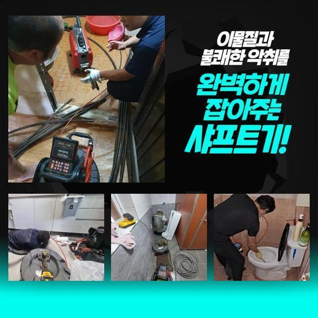
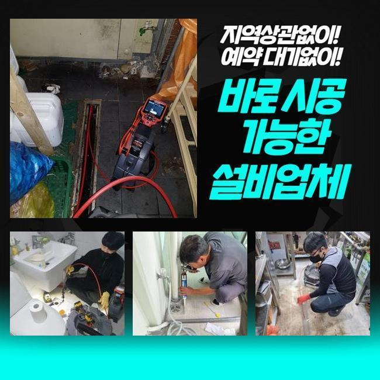
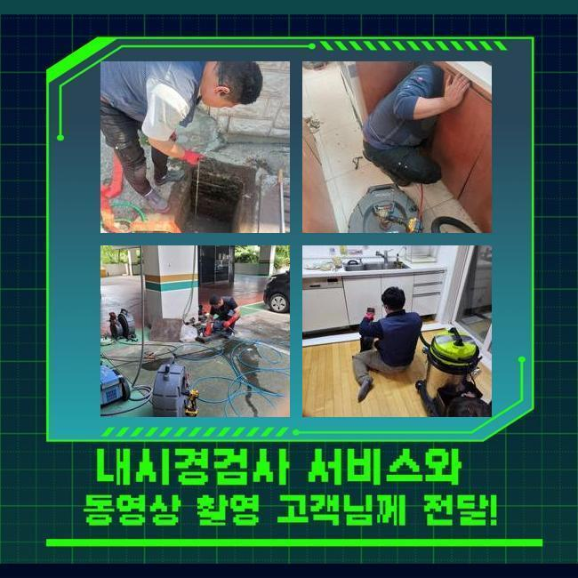
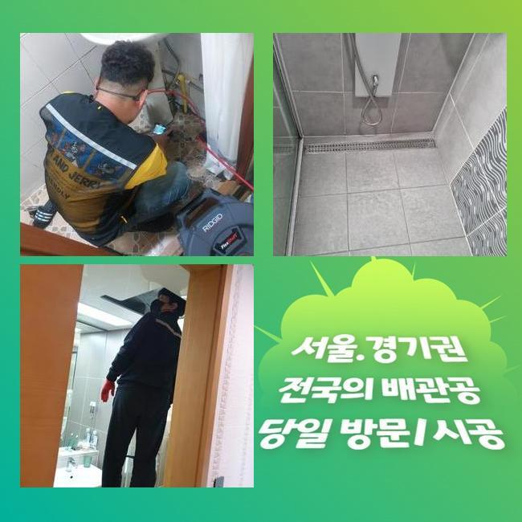
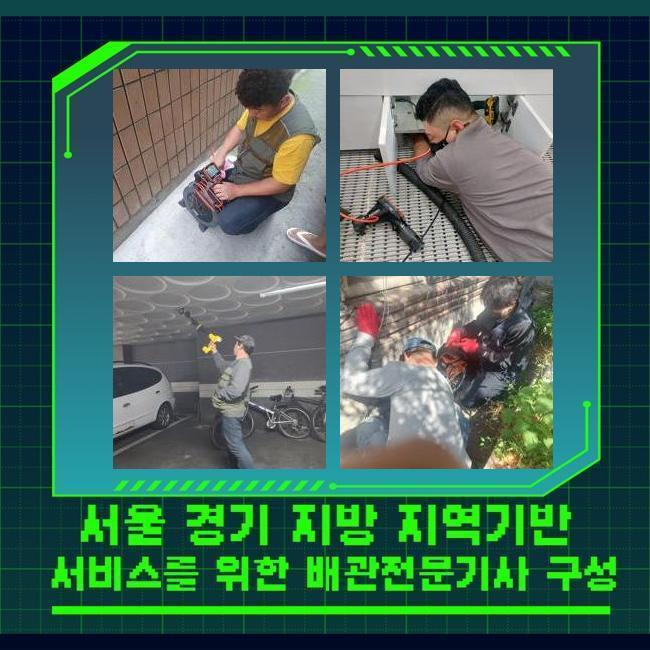
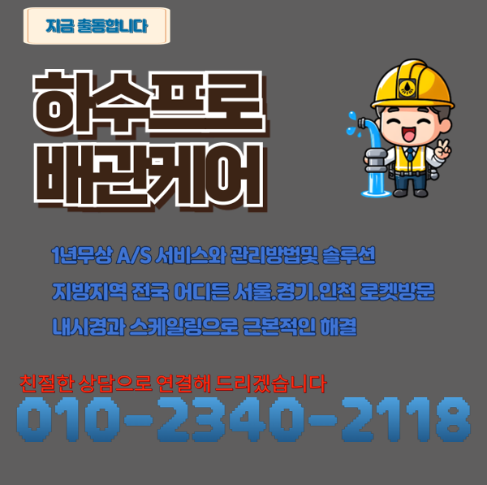

🏠 동작구 본동싱크대역류 대방동 하수구뚫어주는업체 부속수리
용인 싱크대막힘 전문 시공 후기

📋 작업 개요
- 위치: 용인
- 서비스 유형: 싱크대막힘, 하수구막힘, 배관막힘, 역류해결, 뚫는업체, 배관청소, 고압세척
- 작업 일시: 2025. 5. 22. 15:31
- 업체명: 하수구수사대 (010-5615-2118)
🔍 문제 상황
동작구 본동싱크대역류 대방동 하수구뚫어주는업체 부속수리
청소나 설거지 등으로 물을 쓰면서 여러 문제들로 인해서 배관 통로에 지저분한 것들이 층을 이루고 불어날 수 있어요
몸체가 커지다보면 뻑뻑한 밀집도로 접착이 되어버릴 수 있어서 물을 아무리 부어도 변화가 없어요
한 몸처럼 결합되어진 오물을 걷어내려고 과한 처사를 보이다가 배수로 어딘가에 구멍이 나는 문제점까지 야기하게 됩니다
잘못된 쪽이 두드러지는 상태라고 하더라도 적절한 기능을 갖춘 장치들을 조합해서 정리해야 원활하고 차질없이 배수관을 만들 수 있어요
홀로 하수구 뚫음을 시도하면 전체적인 문제를 다 물색하긴 어려우며 괜히 수고로운 시간을 보낼겁니다
이번에 찾았던 작업장은 다수의 가구원이 계신 곳으로 하수가 거꾸로 치솟아서 엄청난 고충을 겪고 있어서 다급하게 고쳐달라고 넣어주신 곳이었습니다
지체하는 시간을 줄이고 작업에 들어가는 도구를 갖고 초인종을 눌렀습니다
걸음을 재촉해서 사태를 확인해 보니 바닥 하수구 속에서 혼탁한 물이 역전되고 있었습니다
쉽게 해결될 줄 알고 시중의 액상 클리너로 여러모로 힘써 보았지만 그다지 물길이 트이지는 않고 변화가 없었다고 합니다

🔎 원인 분석
💡 전문가 진단: 정밀 진단 장비를 사용하여 슬러지의 고착 여부를 판명하고 타격/세척 작업을 실시했습니다.
내부의 부패한 물까지 넘쳐서 냄새분자까지 확산되어 들어서자마자 두통이 생겨서 스트레스 받고 계신다고 하셨어요
이런 하수 정체를 분명하게 없애서 재발이 없게끔 하려면 내부에 자리한 어떤 문제로 하수의 소통 장애가 도래한 것인지 분명한 사유를 판단해 보아야 합니다
본격 작업착수에 앞서서 내부 관측을 돕는 내시경 기기를 안으로 보내어 관로 안을 분석했는데요
이 카메라를 돌려서 세세하게 관측해보니 물이 빠져나가는 경로 도중에 유지가 가득 쌓여있는 상황이 원인이 됐음을 짐작해 보게 됐습니다
하나의 덩어리화가 된 기름 덩어리를 타격해서 해체시키고자 한다면 배관 표면에 마모가 일어날 위험성이 도사리고 있습니다
그러므로 적정 강도로 없애주는 툴이나 약물의 힘을 빌리는 게 안정성이 더 높은 솔루션입니다
이렇게 내부 탐방을 통해서 분석한 데이터를 전달을 해드리고 나서 수리를 해주는 효율적 장비를 가동하여 청소해 나갔습니다
고압의 물을 활용한 작업이 들어갔는데 기본적인 세척이 됐을 때 다시금 한번 조금씩 이동하며 스크린을 주시하면서 진행도를 살폈습니다
하수가 조금씩 이동되는 모습을 발견했지만 여전히 청소가 남아 있는 상황이어서 계속 임하고 있던 고압세척 작업에 돌입했어요
통수를 가로막던 유지방이 풀리고 시원스럽게 길이 열렸음을 체크하고서 시공을 완수할 수 있었네요

🔧 작업 과정
최후로 내시경을 넣어서 변화된 곳을 봤는데 가득 끼어있던 기름층들이 제거되고 처리되어 배수로가 깔끔하게 정리된 상태임을 알게 됐습니다
배관의 곳곳에서 벽체와 하나로 합체되어 있었던 기름덩어리의 존재감이 초반에는 대단했는데 천만다행이게도 다른 장치를 다시 세팅하지 않아도 내부 정화가 완수되어서 시공 과정이 간소화됐습니다
만일 이와 같은 슬러지가 아니고 견고한 석회가 껴서 막힘이 탄생했다면 이것처럼 쉬운 절차로는 마무리가 안됐을 겁니다
굳어진 석회 덩어리가 물길을 봉쇄하고 있다면 장비를 마구 돌려서는 안 되고 결합된 석회가 풀릴 때까지 연화제를 넣어야 합니다
액화 처리를 하는 클리너를 삽입하고 대기하면 거품이 한껏 부푸는데 물을 조금씩 내려보내며 희석시켜 주면 중화가 되면서 성질이 연하게 변합니다
이와 같은 석회 용액은 일반 마트나 가게에서 가볍게 살 수 없으므로 심상치 않은 물질이 끼인 걸 인지하셨으면 혼자가 아닌 전문적인 조치를 받아야 말끔하게 해결될 것입니다
관로 청소를 해주는 액체로 스스로 뚫어보려 하시는 분들도 계신데 석회로 인한 상황 속에서는 클리너만 써서는 손 쓰기 힘듭니다
하수구의 소통이 막히는 이유는 여러가지 경우의 수가 있어서 본단계부터 착공하는 게 아니라 먼저 내시경 기기를 동원해서 봉쇄된 곳을 먼저 체크해야만 확실하게 배수관을 탈바꿈 시킬 수 있어요
겉에서 들여다 본다고 해도 어둡고 깊은 하수구의 하수 설비의 구조를 판별하기는 어려움이 있어요
그러므로 내시경을 통해서 내측을 살펴보는 단계가 토대가 되어야 할 것입니다
막힘이 생겨버리는 건 며칠만에 생기는 현상이 아니고 장기간 꾸준히 누적되면서 물에 쓸려간 파편과 입자들이 서서히 모여가다가 견고한 결합체로 진화할 수 있습니다
완전한 불통이 되기 전에 철저히 케어하는 게 바람직한데 예를 들면 일정한 시기마다 온수를 배수관 안으로 부음으로써 모여든 오염원들이 녹아서 해체되도록 간헐적으로 희석시켜주세요
굵은 입자의 쓰레기가 흘러은연 중에 삽입되지 않도록 배수구 필터 등을 구멍에 장착하는 것이 안심되는 조치입니다
거주 목적의 가정집을 비롯해 공공 건물 등 어디든 어떤 용도로든 물을 쓴다면 이와 같은 하수구에 대한 사안과 마주할 수 있어요
초반의 막힘 징후를 알아차리게 된 시점에는 심화되기 이전에 신속하게 작업이 이뤄져야 할 것입니다
막힘이 처리되지 않고 남겨지면 역류 현상이 불가피해지고 벌레나 악취와 같은 문제에 부딪힐 수 있습니다


✅ 작업 완료
역행이 한번 생겨버리면 밑층까지도 수해가 적용될 수 있고 피해를 수습하기 위한 금액도 스스로 짊어질지도 모릅니다
배관 장애물이 형성되지 않도록 철저히 지켜보면서 이용을 하면 좋을 겁니다
평상시에 신경써서 관리 시설물을 이용하신다고 해도 활용하는 도중에는 막힘이 어느순간 생길 수 있습니다
섣부르게 대응하지 마시고 저희 업체에 하수관의 보완을 맡겨주세요



⚠️ 주방 싱크대 배관 막힘 예방 수칙
- ✅ 기름기가 묻은 식기나 프라이팬은 설거지 전 키친타올로 반드시 기름때를 닦아내세요.
- ✅ 주기적으로 싱크대 개수대에 뜨거운 물을 가득 받아 한 번에 내려 배관 내부 기름을 씻어내세요.
- ✅ 배수구 거름망을 미세한 필터로 사용하시고 음식물 찌꺼기가 틈으로 새어 들지 않게 관리하세요.
- ✅ 베이킹소다와 식초를 뜨거운 물과 함께 일주일에 한 번씩 부어주면 배관 살균과 막힘 예방에 좋습니다.
💡 핵심 정리
- 확실한 장비 작업(내시경 점검 및 샤프트 스케일링)으로 원인을 뿌리 뽑습니다.
- 작업 후 1년 이내에 동일한 부위 재발 시 100% 무상 A/S 서비스를 보장합니다.
- 서울 · 경기 · 인천 전 지역에 24시간 언제든 긴급 출동할 수 있도록 항시 대기 중입니다.
❓ 자주 묻는 질문 (FAQ)
🚨 용인 싱크대막힘 문제로 고민이신가요?
정확한 원인 진단과 확실한 시공으로 재발 없는 해결을 약속드립니다.
24시간 긴급 출동 | 서울 · 경기 · 인천 전지역 | 1년 내 재발 시 무상 A/S